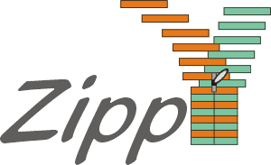

|  |
a research project of the funded by the Swiss Federal Institute of Technology (ETH) Zurich;in cooperation with the
|
| Overview | Team | Publications | Talks | Links |
In the ZIPPY project, we pursue following goals:
|
Comments:
Zippy Webmaster Last change: |